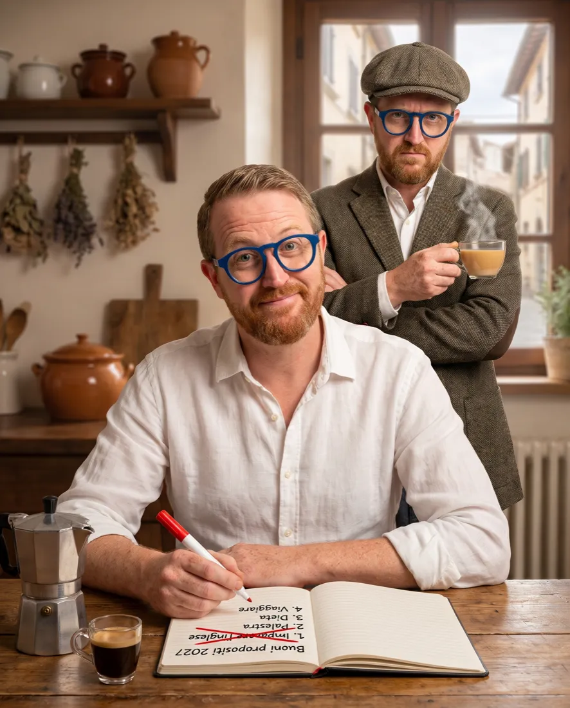
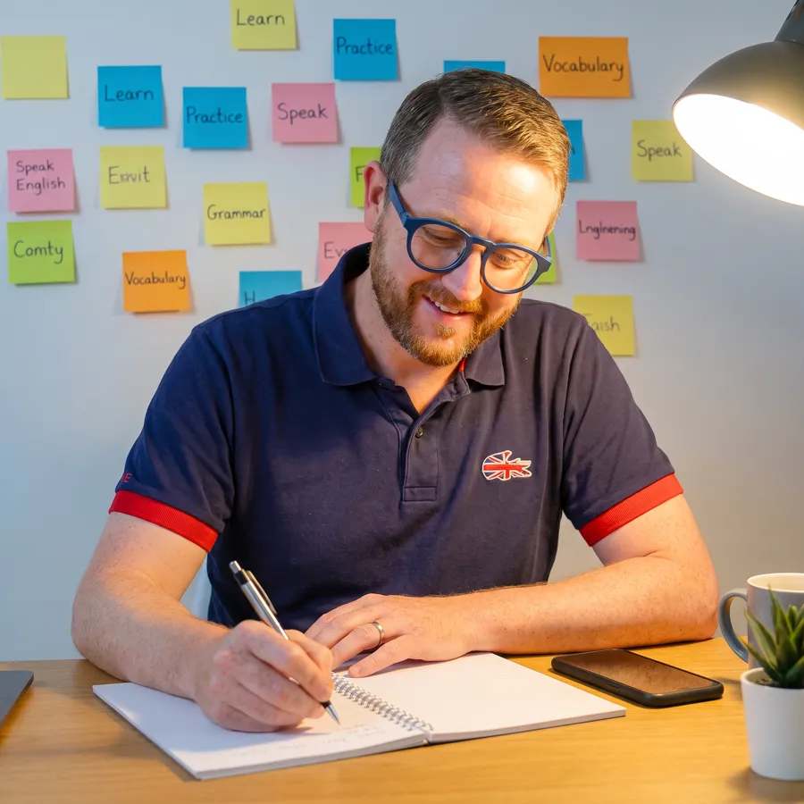
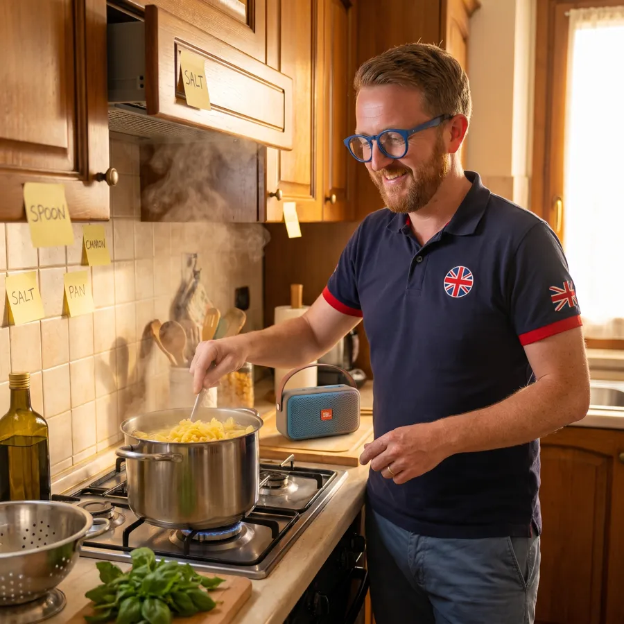
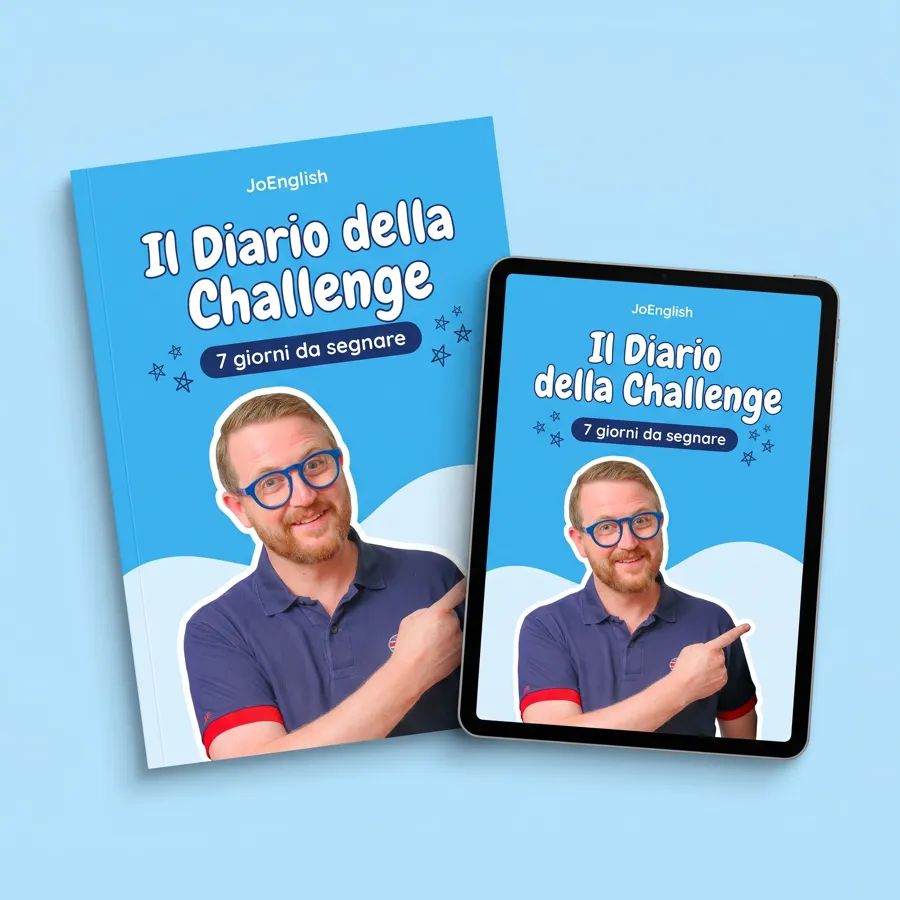
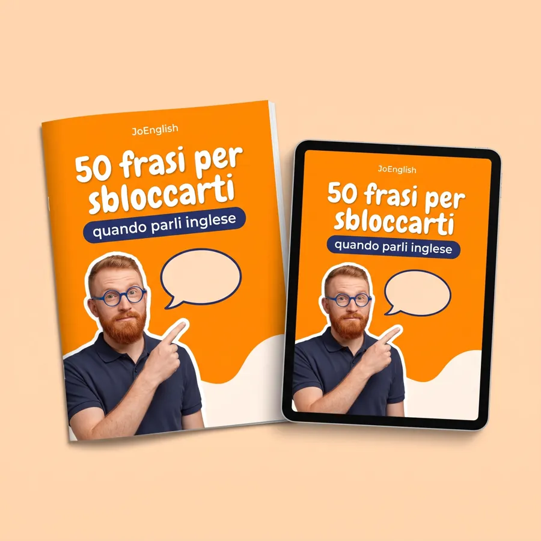
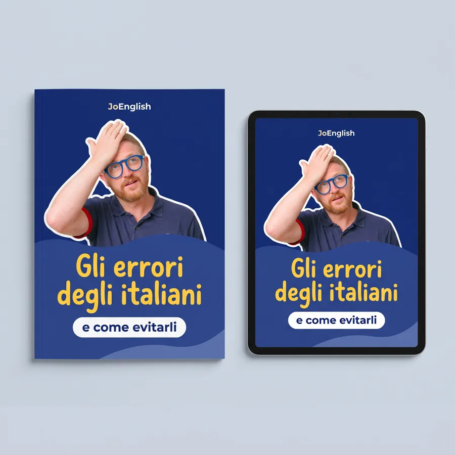
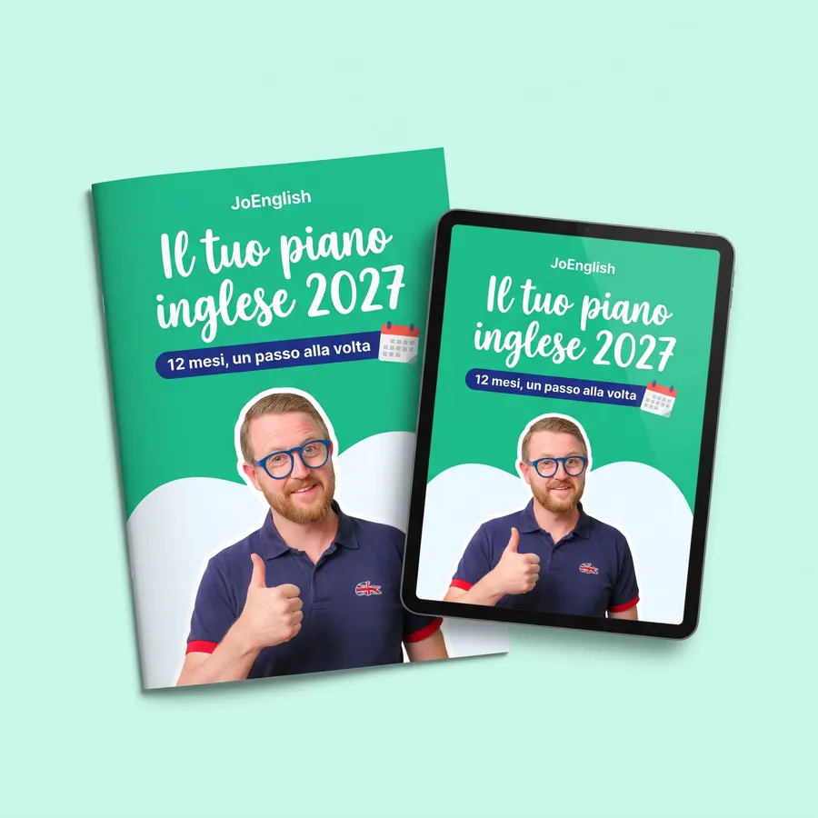

Sblocca l'IngleseLa challenge gratuita di 7 giorni con Joe
7 giorni per far partire il tuo inglese nel 2027, e non mollarlo a febbraio.
Un giorno alla volta: piccole pillole piacevoli e dirette con Joe per smettere di studiare l'inglese e cominciare a viverlo.

Iscriviti gratis a Sblocca l'Inglese
Ti mandiamo tutto via email, giorno per giorno
🔒 Niente spam. La segui da casa o dal telefono.


Ogni anno la stessa storia
Fine dicembre. Prendi un foglio e scrivi i buoni propositi per l'anno nuovo. L'inglese c'è sempre. Anzi, di solito è il numero uno.
A gennaio parti carico: scarichi l'app, compri il libro, ti prometti mezz'ora a sera.
Poi arriva febbraio. Il lavoro, la stanchezza, le serate che volano. L'app resta sul telefono, il libro sul comodino. E l'inglese è il primo proposito della lista a prendersi la X.
Se ti è successo, il problema non sei tu.
Il problema è che ti hanno insegnato a studiare l'inglese come una materia: regole, schede, verifiche. E quando la vita si riempie, una materia è la prima cosa che molli.
Ti riconosci?
Sono le cose che ci scrivono ogni giorno migliaia di italiani. Se almeno una è la tua, questa challenge è fatta per te.
Studi da anni, ma quando devi parlare ti blocchi.Sai la regola, ma la frase non esce.
Capisci quando leggi.Ma se qualcuno parla veloce, non prendi più niente.
In riunione in inglese resti zitto.Anche quando sapresti benissimo cosa dire.
In vacanza parla sempre qualcun altro.Al ristorante, in hotel, per chiedere una strada.
Le serie le guardi in inglese...con i sottotitoli in italiano, e leggi quelli.
Hai provato app, corsi e libri.Nessuno ti ha mai fatto parlare davvero.
Non ti manca la buona volontà. Ti manca un modo di imparare che stia dentro la tua giornata. Joe ha imparato l'italiano da zero a 30 anni trasferendosi in Puglia: non l'ha studiato, l'ha vissuto. In 7 giorni ti fa vedere come si fa con l'inglese.
Cosa succede nei 7 giorni
Ogni giorno una sfida in piccole pillole, da fare quando vuoi. E Joe in diretta ad aprire e chiudere la challenge.
Diretta di apertura con Joe
Il cambio di approccio: da studiare l'inglese a viverlo.
Capire l'inglese vero
Quello che si parla davvero, non i dialoghi da manuale.
Aprire bocca
Parlare senza bloccarti a metà frase. Anche sbagliando.
Leggere senza traduttore
Cose che ti interessano, senza Google Translate sempre aperto.

Giorno 5WRITINGScrivere con sicurezza
Un messaggio, una mail, una nota: in inglese, senza ansia.

Giorno 6360°L'inglese nella tua giornata
Come mettere insieme le 4 aree, senza aggiungere fatica.
Diretta finale con Joe + estrazione della videochiamata
Il piano per tenere vivo il tuo inglese per tutto il 2027, le risposte alle tue domande e l'estrazione in diretta.

Tutto con il Metodo 360°, lo stesso che usano gli oltre 30.000 studenti di JoEnglish: ascolto, parlato, lettura e scrittura insieme, perché l'inglese si impara usandolo tutto, non un pezzo alla volta.
I bonus della challenge
Tutto gratis, per chi si iscrive. Le guide arrivano via email durante la settimana.

Il Diario della Challenge
Il PDF da stampare per segnare i 7 giorni e vedere i tuoi progressi.
Subito all'iscrizione
50 frasi per sbloccarti quando parli
Le frasi pronte che Joe usa per non restare mai muto a metà discorso.
Giorno 3
Gli errori che fanno tutti gli italiani
Quelli che Joe sente ogni giorno, e come toglierteli di dosso.
Giorno 5
Il tuo piano inglese 2027
Come tenere vivo l'inglese tutto l'anno, mese per mese, dopo la challenge.
Diretta finale
Una videochiamata 1 a 1 con Joe
Chi completa tutti i 7 giorni ed è presente alla diretta finale entra nell'estrazione di [N] videochiamate private con Joe.
- 15 minuti solo tu e Joe
- Gli racconti dove sei con l'inglese e dove vuoi arrivare
- Ti dà il suo consiglio su misura per il tuo 2027

Chi è Joe
Joe è nato nel Devon, in Inghilterra. Nel 2006 ha mollato tutto e si è trasferito in Puglia senza sapere una parola di italiano.
L'italiano l'ha imparato vivendolo: al bar, al mercato, con gli amici. Da lì è nato JoEnglish, dove oggi insegna l'inglese agli italiani insieme alla sua famiglia, con lezioni live ogni settimana.
Lo seguono oltre un milione di persone sui social, ha scritto libri, giochi e una serie TV per imparare l'inglese.


Questa challenge fa per te?
Meglio dirselo subito: non è per tutti.
È per te se...
- Hai già provato app, libri o corsi e ti sei sempre fermato dopo qualche settimana
- Capisci qualcosa, ma quando devi parlare ti blocchi
- Ti serve l'inglese per il lavoro, un viaggio o un esame
- Parti da zero e non sai da dove cominciare
- Vuoi un metodo che stia dentro la tua vita, non sopra
Non è per te se...
- Cerchi il trucco per parlare fluente in 7 giorni: non esiste, e non te lo promettiamo
- Vuoi solo regole di grammatica e schede da compilare
- Non hai voglia di metterti in gioco nemmeno per una settimana
- Ti va bene ritrovarti a gennaio 2028 con lo stesso proposito
Cosa dicono gli studenti di Joe
Oltre 30.000 italiani studiano inglese su JoEnglish.com.


Domande frequenti
Sblocca l'Inglese è davvero gratuita?
Sì, al 100%, bonus compresi. Ti iscrivi con nome ed email e ricevi tutto quello che serve, giorno per giorno.
Quando inizia?
Si parte martedì 19 gennaio con la diretta di apertura di Joe alle 20:30. Le sfide dei giorni successivi le fai quando vuoi tu.
Devo avere già una base di inglese?
No. La challenge è pensata sia per chi parte da zero sia per chi ha già studiato e vuole smettere di ricominciare ogni anno.
Come ricevo le guide PDF?
Via email: il Diario della Challenge subito dopo l'iscrizione, le altre guide durante la settimana, il piano 2027 nella diretta finale.
Come funziona la videochiamata con Joe?
Chi completa tutti i 7 giorni ed è presente alla diretta finale entra nell'estrazione. I vincitori vengono annunciati in diretta e contattati via email per fissare la chiamata.
Da dove la seguo?
Da dove vuoi: computer, tablet o telefono. Ti basta una connessione internet.

Quest'anno l'inglese non si prende la X
Sblocca l'Inglese: 7 giorni con Joe, gratis, 4 guide PDF in regalo. Si parte martedì 19 gennaio alle 20:30.
Sì, voglio sbloccare il mio inglese